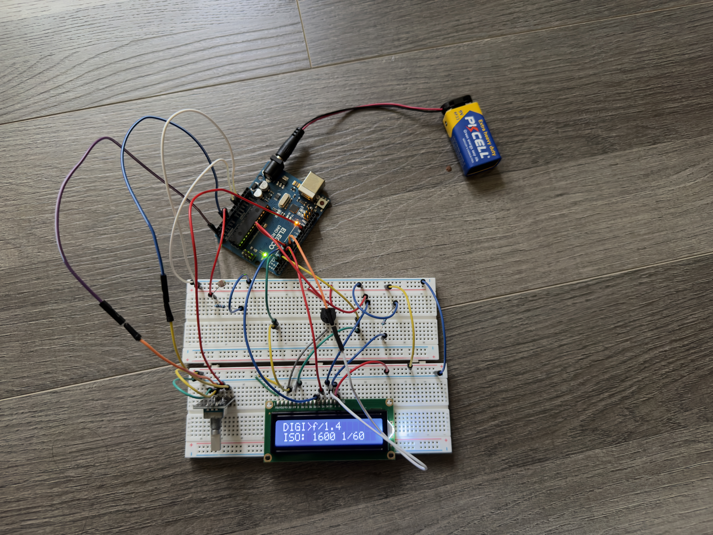

DIY Light Meter — Film & Mirrorless Cameras
A handheld light meter built from discrete components that outputs aperture, ISO, and shutter combinations for film SLRs and mirrorless bodies in real time.
Background
I’m passionate about photography. I’ve been getting into film more, and I shoot with a manual lens on my mirrorless camera. With no lens–body electronic link, the body doesn’t get aperture data the way it would with a native lens, and its metering doesn’t line up — so it doesn’t really give trustworthy ISO and shutter guidance for how I’m shooting. I wanted one small device I could use on that mirrorless rig and on film cameras too, which is what motivated this project.
If you’re interested in my photography, I post on Instagram (@dhruvuh.jpg).
Project Overview
- Role: solo project
- Key hardware: Arduino UNO, LDR + 10KΩ divider, LCD1602, rotary encoder (CLK/DT/SW), contrast potentiometer, breadboard
- Tools used: Arduino IDE (C++/AVR), serial monitor (9600 baud debug), reference light meter app for calibration
The Challenge
When you set aperture, ISO, and shutter by hand, you want a brightness readout you can trust beside the camera. In-camera reflected meters are easy to misread off very bright or dark subjects. A small dedicated light meter gives a separate exposure readout while you dial settings on the body. Good handheld meters are often expensive; this one was built from scratch around an LDR, an Arduino, and a simple UI.
Requirements
I needed it to do three things reliably. First, take a raw lux reading from an uncalibrated LDR and convert it into a shutter speed I could actually trust. Second, handle two different shooting workflows — film mode where ISO is locked to a roll, and mirrorless mode where the firmware walks the ISO ladder until the shutter speed clears a hand-holdable threshold. Third, register every single encoder detent without missing inputs. That last one sounds trivial until you realize how easy it is to get wrong.
Design & Logic
Light sensing
An LDR (light-dependent resistor) sits in a voltage divider with a 10KΩ resistor. The Arduino reads the junction voltage on an analog input (A0) and converts it to an approximate lux value using the LDR's resistance curve.
Lux measures illuminance: how much visible light lands on a surface, in lumens per square meter. Brighter scenes mean higher lux; the firmware uses that number as a bridge from raw ADC counts to the photographic exposure equations below.
Exposure value formula
Once the code has a lux estimate, it plugs into the usual EV-at-ISO-100 relation — lux is the light side of the equation, EV is the camera-neutral “brightness” step photographers use for aperture, shutter, and ISO.
The meter implements the standard photographic EV formula:
EV₁₀₀ = log₂(lux / 2.5)Where EV100 is the exposure value calibrated to ISO 100. From there, shutter speed is solved algebraically:
t = N² / 2^(EV₁₀₀ + log₂(ISO / 100))Where N is the f-number (aperture) and t is shutter speed in seconds. The result is matched to the nearest standard shutter speed on a log scale.
Two metering modes
Film / SLR mode
- The user sets aperture and film ISO (locked per roll). The meter outputs the correct shutter speed.
- A short click on the rotary encoder toggles the cursor between aperture and ISO selection.
Mirrorless mode
- The user sets aperture only.
- The meter walks the ISO ladder from 100 upward, solving for shutter speed at each step, and outputs the lowest ISO that produces a hand-holdable shutter speed (≥ 1/60s).
- This mirrors how a camera's Auto-ISO logic works internally.
Calibration
The photoresistor is not factory-calibrated. A scalar calibration constant (CAL) in firmware scales the lux estimate so it tracks real-world illuminance well enough for exposure math.
Calibration was performed by comparing meter output against a reference light meter app across multiple lighting conditions (indoor tungsten, shade, overcast, direct sun) and adjusting CAL until readings agreed within one-third stop.
System overview

Implementation
Prototype phase

Hardware
| Component | Role |
|---|---|
| Arduino UNO | ADC, EV math, UI logic |
| LDR + 10KΩ resistor | Voltage divider light sensor |
| LCD1602 | Real-time exposure display |
| Rotary encoder (CLK/DT/SW) | Aperture and ISO input, mode toggle |
| Potentiometer | LCD contrast adjustment |
| Breadboard + jumper wires | Prototyping |
Firmware architecture
- Written in C++ for Arduino (AVR)
- Fully non-blocking main loop — no
delay()calls - Encoder read on every loop iteration (falling-edge detection) for zero missed pulses
- LCD and LDR updates on independent millisecond timers (120ms / 100ms)
- Short click vs long press detection on encoder SW for dual-function button
- Serial debug at 9600 baud streams ADC, estimated lux (illuminance), EV, ISO, and shutter speed
Controls & LCD layout
| Input | Action |
|---|---|
| Rotate encoder | Change aperture (or ISO in film mode when selected) |
| Short click | Film mode: toggle cursor between aperture and ISO |
| Long press (1s) | Toggle Film ↔ mirrorless mode |
Film mode (editing aperture):
FILM>f/5.6
ISO: 400 1/250Film mode (editing ISO):
FILM f/5.6
ISO:>400 1/250Mirrorless mode (firmware shows DIGI on the LCD):
DIGI>f/5.6
ISO: 400 1/250Debugging & Iteration
- Problem: the encoder direction appeared stuck — it only stepped one way.
- Cause: Arduino UNO pin 13 has a built-in LED and series resistor tied to ground, so ENC_DT could not float HIGH correctly and the direction bit was wrong.
- Fix: moved DT to pin 12.
- Outcome: reliable clockwise/counterclockwise decoding.
- Problem: the UI felt laggy and the encoder skipped detents.
- Cause: a
delay(150)in the main loop limited polling to ~6 Hz, so most mechanical steps happened between samples. - Fix: removed all blocking delays; poll the encoder every loop iteration (~10k iter/s) and refresh LCD/LDR on separate millis timers.
- Outcome: immediate, repeatable encoder response.
- Problem: occasional false or double steps on cheap encoder edges.
- Cause: noisy transitions on both edges of CLK.
- Fix: count only the falling edge of CLK for each detent.
- Outcome: fewer spurious toggles; one detent maps to one UI step.
- Problem: turning an uncharacterized LDR into a trustworthy lux (illuminance) estimate.
- Cause: film mode fixes ISO, so errors in lux propagate straight into shutter speed; mirrorless mode can mask bias by bumping ISO to hit the 1/60s floor.
- Fix: tune scalar
CALagainst a reference meter across scenes; use the film vs mirrorless asymmetry to spot offset. - Outcome: readings within about one-third stop of the reference app across tungsten, shade, overcast, and sun.
Wiring discipline matters too: keep analog sensor leads short and avoid routing sensitive lines next to noisy digital edges where possible on a breadboard build.
Reflection
The analog front end looks trivial — a divider into the ADC — but the LDR curve and the CAL constant are what decide if the shutter numbers mean anything.
Mirrorless mode and film mode also surface errors differently, which made calibration feel less like a formula and more like chasing a reference until it stopped lying.
Implementing EV math and snapping to real shutter speeds in code made the link between what I set on a camera and what the meter thinks is finally click.
The thing that surprised me most was how much pin choice matters. Moving ENC_DT off pin 13 because of the built-in LED and series resistor is not something any tutorial warns you about — I only found it by tracing the signal and noticing the direction bit was always wrong. That kind of hardware-level detail is invisible until it breaks something, and finding it taught me more about the Arduino schematic than any documentation did.
Next iteration I want a KiCAD PCB that's closer to enclosure-ready, a BH1750 so lux isn't a guess, ±1 stop on the LCD for bracketing, and a real box with something sensible over the sensor.